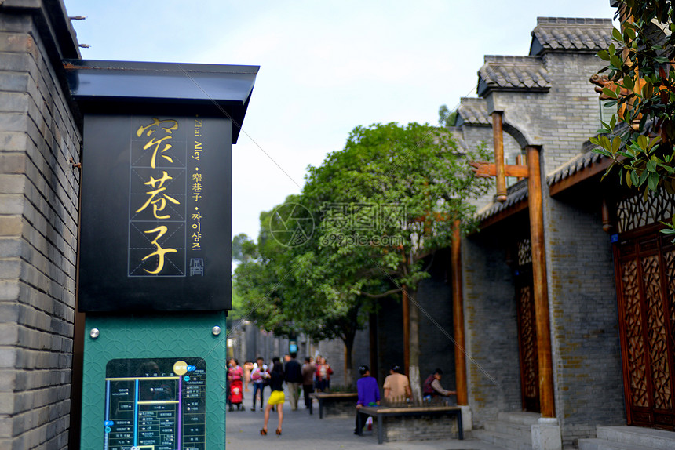
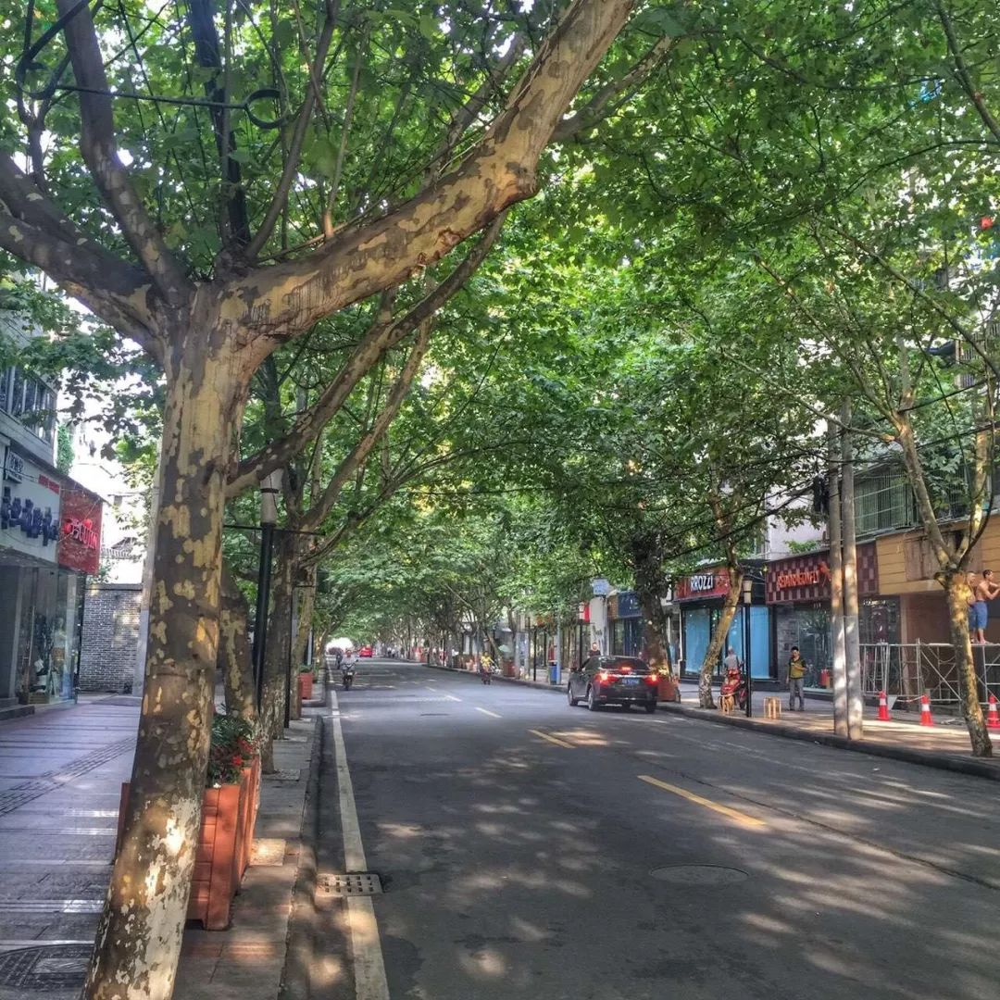
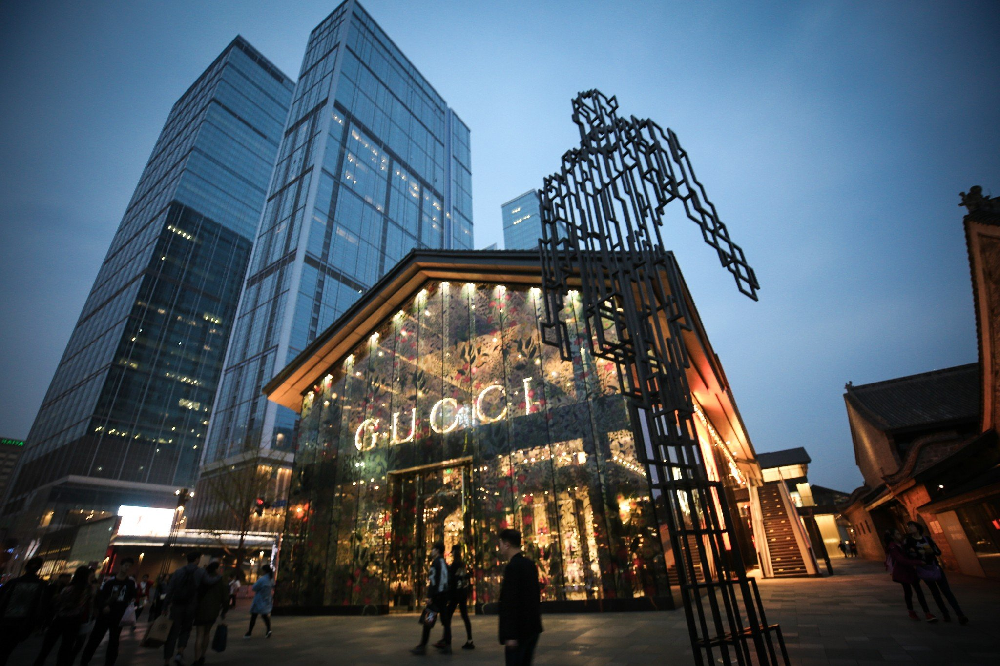

在茶香与烟火之间，找到属于自己的节奏。去看熊猫，逛老街，吃一顿不赶时间的火锅。
从城市街巷到山野之间，收藏你的成都目的地。

在老成都的院落里，遇见时光
山色空蒙，寻一段清静时光

从街头小馆开始，吃遍成都烟火

古意与新潮，在街角自在相逢
早上去巷口喝一碗盖碗茶，午后沿着锦江慢慢走，等夜色落下来，再把热气腾腾的火锅摆上桌。
成都的好，不在于你看了多少风景，而在于你终于有时间，好好生活。
—— 写给每一个想慢下来的你